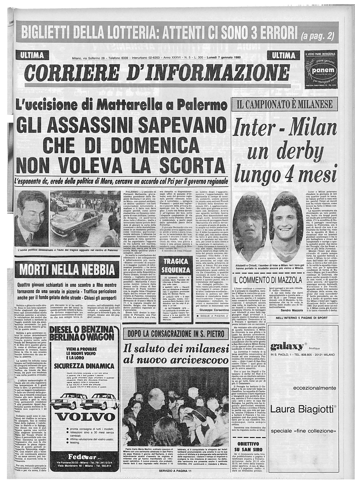

1980
L'uccisione di Mattarella a Palermo
On April 23rd 1981, Stefano Bontate was killed by Giuseppe Greco. He was the Palermo Mafia boss who more than any other embodied the balance between crime politics and business. For many, this date marked the beginning of the Second Mafia War, after the first one that was fought in the sixties. The clash between the Corleone and Palermo clans, according to the reconstructions made so far, was motivated by the desire to manage firsthand the gains in drug trafficking that had become, by the seventies, Cosa Nostra's main criminal activity. A treasure that at that time, was in the hands of Bontade, Salvatore Inzerilloand Badalamenti. Eighteen days later the same happened to Salvatore Inzerillo, Bontade's right arm. He was also shot in the face and disfigured by bullets fired from his executioners' Kalashnikovs. In the same year also his brothers, Santo and Pietro, were killed. The victims of the second Mafia war, won by the Corleoneses, were probably more than a thousand. Moreover, within just five months Pio La Torre and Carlo Alberto dalla Chiesa were gunned down. The former was a Communist Party politician and member of the Anti-Mafia Parliamentari Commission, who had had the courage to devise a bill that would provide for indictment for Mafia association. The second, who had moreover served in Corleone at the time of Placido Rizzotto's murder, had been appointed prefect of Palermo not even five months before he died. The Second Mafia War has no "armistice" or "end of hostilities" date. After 1984, the number of casualties goes way down, both because of the achieved supremacy of the Corleonese and because of the blows dealt to Cosa Nostra by Antonino Caponnetto's "anti-Mafia pool", of which Falcone is the mastermind and stategist. First came the 366 arrest warrants due to the San Michele's blitz of September 1984, then the Palermo Maxiprocess, which began on the 10th of february 1986, and concluded on the 16th of December 1987. Throughout the duration of the trial the Mafia remained as if in apnea, with no murders or striking actions. It was in the Maxiprocess that the events that had characterized that bloody season would be brought to light.
Here is possible to find six important events of the Second Mafia War. The first three are journal articles of "Il corriere della Sera" and are respectively about: the murder of Mattarella, Stefano Bontade and the turncoat that revealed the responsibles of the omicide of seven men during the so called "Cena di Pace". The others are news report about: the murder of Dalla Chiesa, Rocco Chinnici and Giuseppe Fava.
Scholarly Digital EditionL'uccisione di Mattarella a Palermo